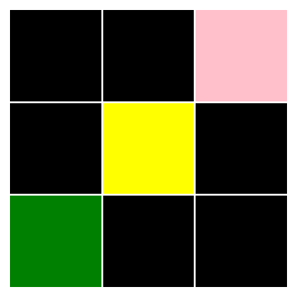

Vector(0,0)Vector(i=0, j=0)An ARC task can be described using an input grid model and an output grid model.
First we will define a few classes for declaring properties of grids and their objects
Vector (i:int, j:int)
2D vector for positions, sizes, and directions.
We will use a Vector class for specifying positions etc. in ARC grids. Positions are denoted as an (i, j) coordinate with respect to the top-left corner of an ARC grid.
Addition, subtraction and scalar multiplication are supported
The to_array method returns a numpy array
There is also a from_array class method, though unpacking is more concise
Color (value:Union[int,str])
Represents a color using an integer value (0-9) or a color name.
There are 10 colors in ARC grids:
['black', 'blue', 'red', 'green', 'yellow', 'grey', 'pink', 'orange', 'cyan', 'brown']The Color class holds the mapping, allowing us to instantiate color properties using either the name or integer value
Direction (value, names=None, module=None, qualname=None, type=None, start=1)
Represents cardinal and intercardinal directions as 2D vectors.
With Direction, we can describe objects such as a line by their start position, length and direction.
The core primitive in ARC tasks is the concept of an Object, located at a position somewhere in the grid. We will define specific classes for different shapes that will each inherit from this base clase.
Object (position:__main__.Vector)
Base class for shape objects in ARC tasks.
Rectangle (position:__main__.Vector, size:__main__.Vector, color:__main__.Color)
Rectangular shape.
The simplest object is a Rectangle, which represents any contiguous rectangular sub-array within the grid. A singleton cell is just a Rectangle of size Vector(1,1)
We give each specific shape a _get_shape_array private method for converting it into a numpy array, e.g.:
array([[2, 2, 2],
[2, 2, 2],
[2, 2, 2]])Line (position:__main__.Vector, direction:__main__.Direction, length:typing.Annotated[int,Gt(gt=0)], color:__main__.Color)
Line shape.
ARC grids often feature straight line objects; e.g. spanning the grid, connecting more complex shapes, etc. To allow us to capture both horizontal/vertical and diagonal lines, we’ll create a new primitive.
For diagonal lines, the _get_shape_array method will return a 2d array with the color value along the appropriate diagonal and -1 elsewhere
l = Line(position=Vector(5,5), direction=Direction.NW, length=4, color=Color(3))
l._get_shape_array()array([[ 3, -1, -1, -1],
[-1, 3, -1, -1],
[-1, -1, 3, -1],
[-1, -1, -1, 3]])Note that the position of an object in the grid always refers to its top-left corner. For an orthogonal line with direction UP or LEFT, or for diagonal lines with direction NW, NE or SW, we will need to subtract an offset to determine the object’s correct position.
Bitmap (position:__main__.Vector, data:numpy.ndarray)
Multi-colored bitmap pattern.
The Bitmap object represents more complex shapes and patterns, including multi-colored patterns.
Bitmap(position=Vector(i=2, j=3), data=array([[3, 0],
[3, 3],
[0, 3]]))We can now define a general to_array method for all objects
Object.to_array (grid_size:Optional[__main__.Vector]=None)
If grid_size is provided, returns the object positioned within a grid of that size. If grid_size is None, returns just the object’s array.
Let’s check the Line object we created. For now, we’ll just use matplotlib’s imshow to visualise the array
It’s a line of length 4, starting at (5,5) and extending in a NW direction.
Line(position=Vector(i=5, j=5), direction=<Direction.NW: Vector(i=-1, j=-1)>, length=4, color=Color('green', value=3))When we use the grid_size argument, it will place the object in the correct position within a larger array
The final primitive is a container for multiple objects representing a grid.
Grid (size:__main__.Vector, background_color:Optional[__main__.Color]=None, objects:List[__main__.Object]=<factory>)
Grid container with a size, background color, and objects.
Now we have everything we need to define grid models.
Let’s define grid models for an ARC task
ArcTask(id='d037b0a7', train_examples=3, test_examples=1)The input grids are all 3x3 and have a black background, containing at least one singleton colored cell. It’s simple to define a model for valid grids in this task:
class InputModel(Grid):
size: Literal[Vector(3, 3)]
background_color: Literal[Color(0)] = Color(0)
@classmethod
def from_array(cls, arr: np.ndarray) -> 'InputModel':
# Find non-black cells
non_black_positions = np.argwhere(arr != Color(0).value)
return cls(
size=Vector(*arr.shape),
objects=[
Rectangle(position=Vector(i=row, j=col),
size=Vector(1,1),
color=Color(c))
for row, col in non_black_positions
for c in [arr[row, col]]
]
)The from_array class method parses an arbitrary numpy array and creates an instance of this Grid class (assuming that the array is a valid example of a grid from this task).
We can test that the input model is correctly parsing the grid by testing if its to_array method reconstructs the original array.

An output model for this task just needs to construct vertical lines starting at each colored cell and extending down to the bottom of the grid.
class OutputModel(Grid):
@classmethod
def from_input(cls, input_grid: InputModel) -> 'OutputModel':
size = input_grid.size
# construct vertical lines extending downward from each colored point
objects = [
Line(position=o.position, direction=Direction.DOWN, length=3-o.position.i, color=o.color)
for o in input_grid.objects
]
return cls(
size=size,
background_color=input_grid.background_color,
objects=objects
)Let’s test it out on the test example
Looks good! Let’s double check against the hidden test array
We can define a few helper functions for perfoming common operations in ARC tasks
ShapeExtractor ()
Extract distinct “shapes” (i.e. contiguous regions of the same value) from a numpy array
During parsing, almost all ARC tasks involve extracting specific shapes. This helper functions removes the need to implement this logic each time. It contains various static methods, e.g.:
ShapeExtractor.extract_all_shapes (array:numpy.ndarray, include_diagonal:bool=False, background_color:Optional[int]=None)
Extract all shapes of all values from a numpy array.
| Type | Default | Details | |
|---|---|---|---|
| array | ndarray | Numpy array | |
| include_diagonal | bool | False | Consider diagonally adjacent cells as connected or not |
| background_color | Optional | None | Optionally specify a background color to ignore |
| Returns | List | List of (sub-array, position, color_value) tuples |
PatternMatcher ()
A class for finding alignments between patterns in numpy arrays. Supports exact matching and partial matching with missing or extra elements.
Often we have extracted a shape (as a subarray) from a grid and we need to find the positions of other identical shapes within a grid. Another common situation is that we have a partial shape and we need to align it with a full version of the shape in a grid. This class allows us to do that, sliding over the larger array and returning the position that maximises agreement between the subarray and the area of the larger array, e.g.:
PatternMatcher.find_best_match (target:numpy.ndarray, pattern:numpy.ndarray, match_type:str='exact')
Find the best matching position for the pattern in the target.
| Type | Default | Details | |
|---|---|---|---|
| target | ndarray | target array | |
| pattern | ndarray | the pattern to align | |
| match_type | str | exact | can be ‘exact’, ‘allow_missing’ or ‘allow_extra’ |
| Returns | Tuple | tuple of (position, overlap_count) |
EnclosureFiller ()
Fill areas of an array that are “enclosed” by cells of a given value
CyclicPattern (data:numpy.ndarray, period:int, axis:typing.Annotated[int,Ge(ge=0),Le(le=1)]=0)
Identify, represent, and manipulate cyclic patterns in ARC task grids, particularly for tasks involving pattern repetition and extension.